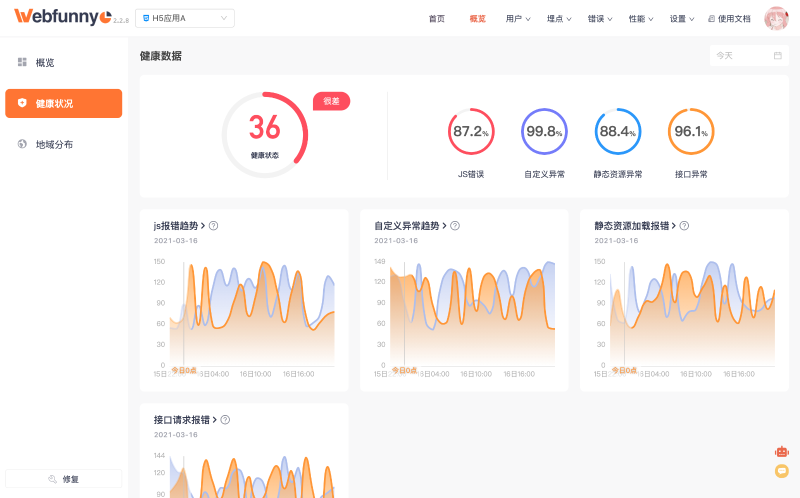
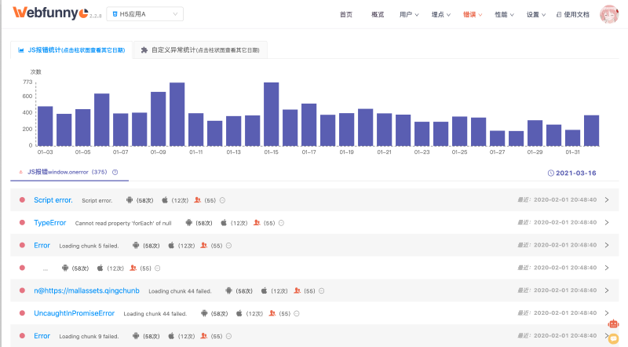
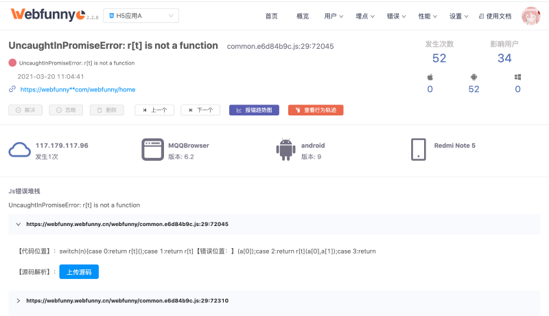
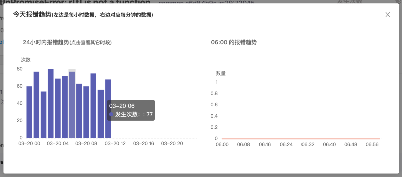
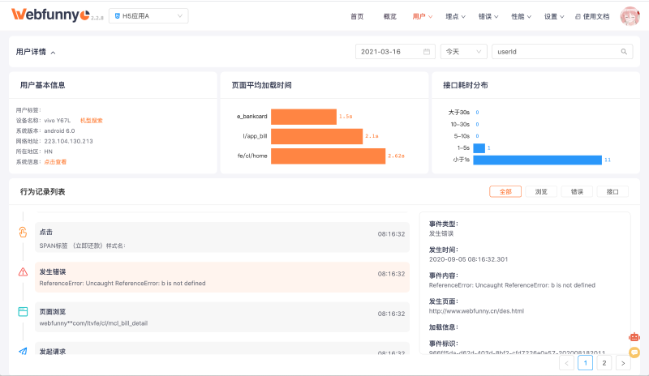

监控流程：监控并收集错误 -> 存储并上报错误 -> 分析并聚合错误 -> 发送错误报警-> 定位并解决 JS 错误
众所周知，我们是有办法去监听前端 Js 错误的，他们分别 window.onerror、window.onunhandledrejection、console.error 方法。
通过这些方法能够为我们记录下线上的运行时错误，以及详细的堆栈信息。我将 window.onerror(捕获异常)，console.error(自定义异常) 方法收集到的错误信息进行分析统计后的效果如下：

// 重写 onerror 进行jsError的监听
window.onerror = function (errorMsg, url, lineNumber, columnNumber, errorObj) {
var errorStack = errorObj ? errorObj.stack : null;
siftAndMakeUpMessage(
"on_error",
errorMsg,
url,
lineNumber,
columnNumber,
errorStack
);
};
window.onerror 方法以及它的参数我就不一一介绍了，我相信大家也已经耳熟能详了；我们记录下错误发生时的行、列号，以及错误堆栈。
window.onunhandledrejection = function (e) {
var errorMsg = "";
var errorStack = "";
if (typeof e.reason === "object") {
errorMsg = e.reason.message;
errorStack = e.reason.stack;
} else {
errorMsg = e.reason;
errorStack = "";
}
// 分类解析
siftAndMakeUpMessage(
"on_error",
errorMsg,
WEB_LOCATION,
0,
0,
"UncaughtInPromiseError: " + errorStack
);
};
window.onunhandledrejection 能够捕获到 Promise 未处理的 rejection 异常，rejection 异常并不会阻断页面运行，容易被很多小伙伴所遗忘，所以我们监控了此类型的错误。
// 重写console.error, 可以捕获更全面的报错信息
var oldError = console.error;
console.error = function (tempErrorMsg) {
var errorMsg = (arguments[0] && arguments[0].message) || tempErrorMsg;
var lineNumber = 0;
var columnNumber = 0;
var errorObj = arguments[0] && arguments[0].stack;
if (!errorObj) {
if (typeof errorMsg == "object") {
try {
errorMsg = JSON.stringify(errorMsg);
} catch (e) {
errorMsg = "错误无法解析";
}
}
siftAndMakeUpMessage(
"console_error",
errorMsg,
WEB_LOCATION,
lineNumber,
columnNumber,
"CustomizeError: " + errorMsg
);
} else {
// 如果报错中包含错误堆栈，可以认为是JS报错，而非自定义报错
siftAndMakeUpMessage(
"on_error",
errorMsg,
WEB_LOCATION,
lineNumber,
columnNumber,
errorObj
);
}
return oldError.apply(console, arguments);
};
console.error 是用来打印警告日志，所以我将其归类为自定义异常。一般像前端框架、引入第三方的插件都会用 console.error 来打印较为严重的警告信息，而我在工作中也会将后台抛出的错误信息（非后台异常）用 console.error 打印出来，上报到监控系统里。这样对排查异常也是有很大作用的（这一点会在行为记录查询中有体现）。
Javascript 错误产生后，应该存入浏览器的缓存中，然后定时上传，如果实时上传，将会对服务器造成压力。通过接口将 Js 错误信息上传到服务器，由后台 server 对数据进行清洗分类，然后再进行持久化存储。因为我用的是 mysql 来存储日志信息，所以需要以 JS 错误为一个 model，明确定义 Js 错误的每个字段，定义如下：
// 设置日志对象类的通用属性
function setCommonProperty() {
this.wmVersion = WM_VERSION; // 探针版本号
this.happenTime = new Date().getTime(); // 日志发生时间
this.webMonitorId = WEB_MONITOR_ID; // 用于区分应用的唯一标识（一个项目对应一个）
this.simpleUrl = window.location.href.split("?")[0].replace("#", ""); // 页面的url
this.completeUrl = utils.b64EncodeUnicode(
encodeURIComponent(window.location.href)
); // 页面的完整url
this.customerKey = utils.getCustomerKey(); // 用于区分用户，所对应唯一的标识，清理本地数据后失效，
// 用户自定义信息， 由开发者主动传入， 便于对线上问题进行准确定位
var wmUserInfo = lsg.wmUserInfo ? JSON.parse(lsg.wmUserInfo) : {};
this.userId = wmUserInfo.userId;
this.firstUserParam = utils.b64EncodeUnicode(wmUserInfo.firstUserParam || "");
this.secondUserParam = utils.b64EncodeUnicode(
wmUserInfo.secondUserParam || ""
);
}
// JS错误日志，继承于日志基类MonitorBaseInfo
function JavaScriptErrorInfo(uploadType, infoType, errorMsg, errorStack) {
setCommonProperty.apply(this);
this.uploadType = uploadType;
this.infoType = infoType;
this.pageKey = utils.getPageKey(); // 用于区分页面，所对应唯一的标识，每个新页面对应一个值
this.deviceName = DEVICE_INFO.deviceName;
this.os =
DEVICE_INFO.os + (DEVICE_INFO.osVersion ? " " + DEVICE_INFO.osVersion : "");
this.browserName = DEVICE_INFO.browserName;
this.browserVersion = DEVICE_INFO.browserVersion;
// TODO 位置信息, 待处理
this.monitorIp = utils.getCookie("webfunny_ip"); // 用户的IP地址
this.country = "china"; // 用户所在国家
this.province = ""; // 用户所在省份
this.city = ""; // 用户所在城市
this.errorMessage = utils.b64EncodeUnicode(errorMsg);
this.errorStack = utils.b64EncodeUnicode(errorStack);
this.browserInfo = "";
}
Js 错误信息需要包含系统版本号、应用版本号、平台信息、页面 Url、错误信息、错误堆栈、发生时间等等，这样才能帮助我们准确定位，至于数据库的字段如何定义，我就不赘述了，可以访问我的 git 项目查看。
如果每天都去盯着前端的报错数据，真的很耗费精力，而且很难看出是今天发生的，还是一直存在的报错。
其实前端项目每天都会有些报错，比如：script error 。我们既不能控制，也不会影响我们的业务，但它会一直存在。
只要每天的错误量没有波动太大，报错数据比较平稳，就可以认为线上应用是健康的。所以我选择跟一周前的数据进行比较，如果出现大幅上升，那么就需要对这个项目进行关注了，而不是每天查看具体的报错数据。
本文上部的健康状况看板图片就是为了表达这种想法，截图上正是前端发了严重的异常，而出现的曲线图。
那我们来看看如何对这些错误进行聚合，且看下 Webfunny 错误聚合的效果：

首先，我们对捕获的异常类型进行了分类（TypeError、ReferenceError、UncaughtInPromiseError），这样错误类型可以一目了然。
同时我们对发生错误的操作系统（Android、ios、Pc）进行了分类统计，比如截图中的第一个错误，就只会在苹果手机上发生，排查范围也就缩小了很多。
另外，我们把错误影响的人数也统计出来，就可以知道这个错误影响了多少用户，从而确定修复的优先级。
这一步属于监控的附加功能，主要包括邮箱、钉钉、短信等消息通知，和本次讲得知识点无关，我就不细说了。
针对某一个错误，我们需要分析它发生的平台，影响的人数，系统版本，网络环境等等，同时也需要分析最为重要的一步，就是代码的位置。

如图所示
首先，我们分析了错误发生的具体时间、发生次数、影响人数、IP 地址、浏览器版本、操作系统等环境因素
其次，我们还需统计这个报错发生的时间曲线，如果是大量报错，我们可以很容易定位到错误发生的起始点，针对那个时间点，对报错的原因进行定位

还有一个重要的点，就是对代码代码堆栈的分析。我们默认会根据错误提示的行、列号截取错误位置附近的一段代码，正常情况下，我们已经可以通过这段代码来定位出出错的具体位置了。
但是有些小伙伴说，我就是看不出来怎么办，没关系，我们还提供了利用 Js 的 SourceMap 文件反向定位源码的功能，让你准确定位到 Js 源码的位置。
PS：由于 SourceMap 文件反向定位源码的功能较为复杂，我将放到下一个知识分享中进行讲解。
最后，我们将 Js 错误结合到用户的行为记录中，这样我们就能够知道用户在发生错误的前后都做了什么，更进一步的了解错误发生原因，错误详情页提供了查看行为轨迹的按钮，我们来看看结果。
